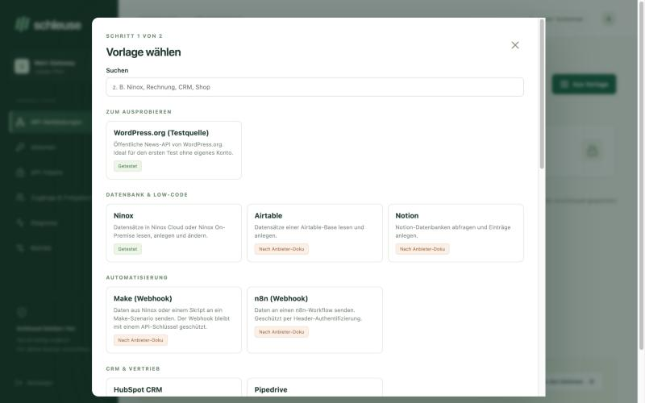
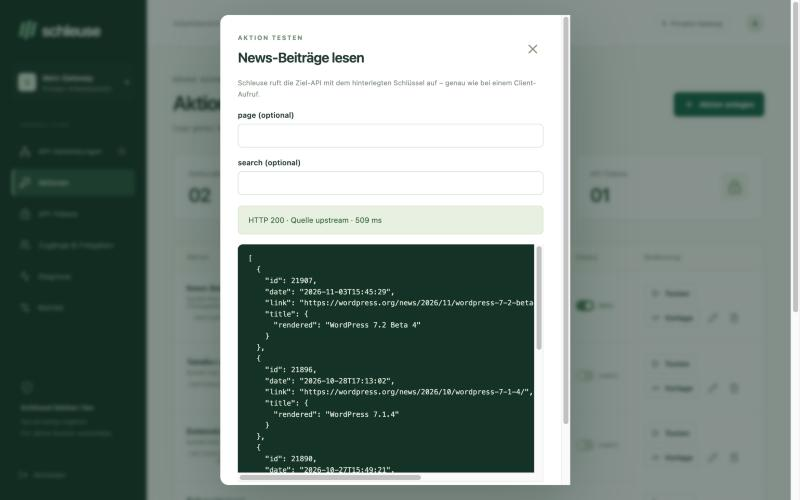
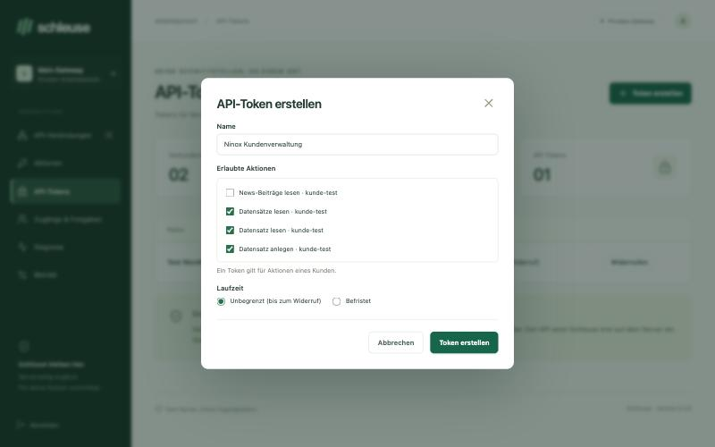
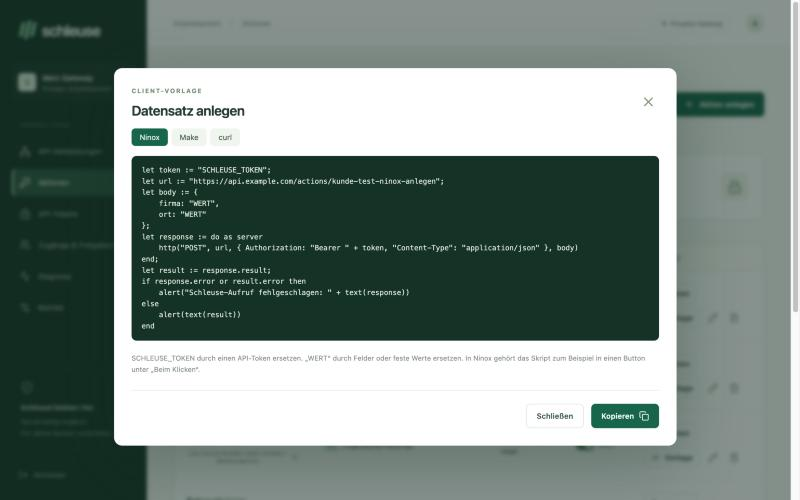

AI right from Ninox
A button drafts payment reminders, replies or summaries. The AI key never appears in the Ninox script – Ninox only knows the Schleuse token.
POST /actions/claude-text
Self-hosted API gateway
Ninox, Make or your script only get a token for approved actions. The real API keys for AI, shop, CRM or accounting stay on your server. Everything is set up in the admin interface.
Use cases
Wherever a low-code tool or script needs an API whose key shouldn’t end up with your customer.
A button drafts payment reminders, replies or summaries. The AI key never appears in the Ninox script – Ninox only knows the Schleuse token.
POST /actions/claude-text
Make fetches records or creates new ones. The Ninox API key opens every database – it stays in Schleuse, and Make only gets the approved actions.
GET /actions/ninox-record?id=12
Read orders and products from the shop and change the order status right from Ninox. Fixed GraphQL queries for Shopify.
PUT /actions/woo-status?id=815
Search and create contacts in HubSpot or Pipedrive, read open invoices from Lexware Office or sevDesk.
POST /actions/hubspot-search
Setup in the interface
This is what the admin interface looks like. All examples use test data. Screenshots show the admin interface, which is currently in German.

01 · Choose a template
Pick a provider, enter the customer and IDs, store the key once. Matching actions are already prepared.

02 · Test an action
One click calls the real target API. The preview instantly shows which data comes back.

03 · Create a token
Select the actions of one customer. Default: unlimited until revoked – no login every 15 minutes.

04 · Paste into Ninox
A ready-made script for Ninox, settings for Make or a curl command – copy, fill in your values, done.
Connector templates
Target address, authentication and typical actions are already filled in. You add your own APIs the same way. “Per provider docs” means: built from the official documentation, not yet tested with a real account.
Try it out
Database & low-code
Automation
CRM & sales
Accounting & invoices
Shop & website
Payments
Communication
Development
AI
What an action can do
/orders/{id}The client passes ?id=815. URL-safe values only, no switching paths.
page, searchFor paging and filters. The client cannot change fixed values like ?status=publish.
{"properties": {"email": "{{email}}"}}The structure stays in Schleuse, the client only supplies the values. Ideal for Ninox, GraphQL and AI.
Bearer · Basic · x-api-keyKey in a header, username and password, or public APIs. Plus fixed extra headers.
200 · 400 · 401 · 403Clear error messages that name the missing value. Diagnostics show status, source and duration.
AES-GCM · CSRF · LimitsKeys encrypted, no redirects, internal networks blocked, 60 calls per minute and token.
Interactive demo · sample data
Pick an action for the same token. The simulation shows how Schleuse reacts to an allowed or a blocked request.
GET /actions/customer-list
No request sent yet.
The test runs with sample data in this browser.
The principle
01 · Connect
The admin interface stores the provider key encrypted and defines target, method, path and allowed inputs.
02 · Approve
A token gets exactly the actions of one customer – unlimited or time-limited, revocable at any time.
03 · Execute
Schleuse checks token, approval and inputs. The gateway inserts the provider key only when forwarding the request.
Questions
Only if Make, n8n or a script should access Ninox. If Ninox itself calls an external API, Ninox only knows the Schleuse token; you enter the target API’s key in Schleuse.
By default until it is revoked. You can also choose a duration in days; for fewer than 30 days Schleuse asks whether that is intended. Revoking takes effect immediately.
The Schleuse token – not the API key. The token only allows the approved actions of one customer, with fixed targets and checked inputs.
Not after installing with Docker Compose. You manage connections, actions, tests and tokens in the admin interface.
Not yet. The admin interface and the documentation are currently in German.
Automatic OAuth renewal (Google, Microsoft 365), file uploads and downloads, streaming, and responses over 2 MiB or 30 seconds.
Self-hosted · version 0.3
Start the gateway with Docker Compose on a Linux server. The installer checks for free ports first. After that, everything runs through the admin interface: templates, tests, tokens and diagnostics.
# In the unpacked project folder
./install-server.sh --plan --show-used
./install-server.sh --prepare
./install-server.sh --install